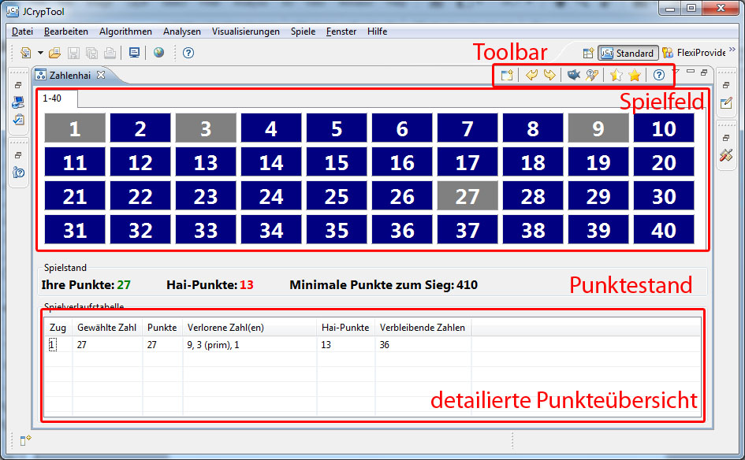
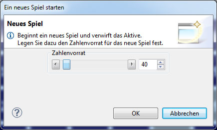
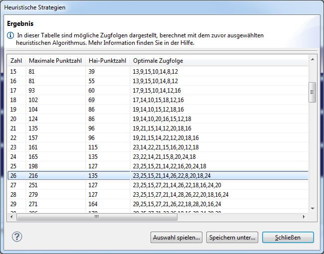
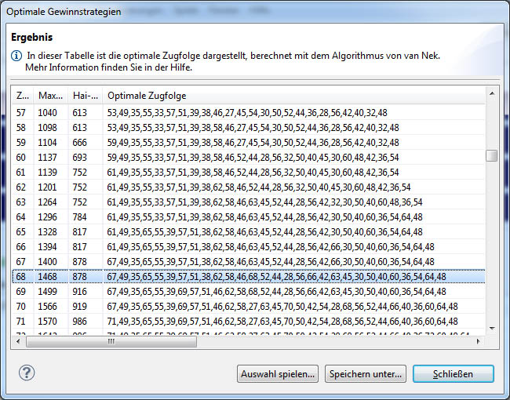

in der Toolbar erscheint der Wizard zum Finden optimaler Strategien. Dort gibt es folgende Auswahlmöglichkeiten:
in der Toolbar erscheint der Wizard zum Finden optimaler Strategien. Dort gibt es folgende Auswahlmöglichkeiten:Das folgende Bild zeigt das Hauptfenster des Zahlenhaispiels. Es besteht aus der Toolbar mit den Optionen zum Spiel, dem Spielfeld, einer Übersicht über den Punktestand und einer Tabelle, in der sich detailierte Informationen über den Spielverlauf befinden.
Das Spielfeld besteht, je nach Spielfeldgröße (hier 190) aus Tabs mit jeweils maximal 40 Buttons, die die auswählbaren Zahlen darstellen.
Aktive, auswählbare Zahlen sind in blau dargestellt. Zahlen, die bereits gezogen wurden, sind grau und können nicht mehr ausgewählt werden.
Verweilt man mit der Maus über einer aktiven Zahl, öffnet sich ein Tooltip, der genauere Informationen über die Zahl liefert. So werden dort die noch aktiven Teiler der Zahl dargestellt und angezeigt, ob die Zahl selbst ein Teiler von einer Zahl des aktiven Spielfeldes ist.
Durch einen Klick auf den Button "Neues Spiel" öffnet sich ein Dialogfenster und ein neues Spiel mit beliebiger Spielfeldgröße (1 bis 1024) kann erzeugen werden. Das aktive Spiel wird dabei verworfen.

Mit diesem Knopf lässt sich der letzte Zug Rückgängig machen. Es lassen sich schrittweise so auch alle Züge des Spieles rückgängig machen.
Durch Klicken auf "Wiederherstellen" kannst ein Zug, der rückgängig gemacht wurde wiederhergestellt werden.
Dieser Button deaktiviert alle Zahlen, die der Zahlenhai aufjedenfall bekommen wird. Dies sind Zahlen, die größer als die Hälfte der aktuellen Spieldfeldgröße sind und keinen aktiven Teiler mehr besitzen. Diese Zahlen bekommt in jedem Fall der Zahlenhai.
Liefert einen Vorschlag, welche Zahl geschickt ist als nächstes auszuwählen. In manchen Spielsituationen kann kein Hinweis generiert werden.
In diesem Wizard können mit diversen heuristischen Algorithmen Zugfolgen generiert werden, die zum Gewinn führen. Mehr dazu unter "2. Heuristische Strategien".
Öffnet einen Wizard, indem Zugfolgen mit maximalem Punktegewinn berechnet und angezeigt werden können. Genaueres dazu ist unter Punkt "3. Optimale Strategien" aufgeführt.
Öffnet die Hilfe.
In der Gruppierung Spielstand werden die aktuellen Punkte des Spielers und des Zahlenhais angezeigt, dabei signifiziert die Farbe der Zahl, wer bei dem aktuellen Stand gewinnt. Ist der Punktestand beim Spieler in grün, liegt der Spieler vorne, ist sie hingegen rot gefärbt, liegt der Zahlenhai vorne.
Die Zahl neben "Minimale Punkte zum Sieg" ist die mindestens zu erreichende Zahl an Punkten, um das Spiel zu gewinnen.
In der Spielverlaufstabelle werden Details über den Ablauf des Spieles angezeigt. Dort wird für jeden Zug dargestellt, welche Zahl der Spieler gezogen hat, wieviele Punkte er hatte, sowie die Zahlen, die er an den Zahlenhai im entsprechenden Zug verloren hat. Außerdem lassen sich die Punkte des Zahlenhais in jedem Zug und die Anzahl der aktiven Zahlen in jedem Zug ablesen.
Hat man das Spiel Zahlenhai ein wenig gespielt, hat man ggfs. bereits seine eigene erste Strategie entwickelt, wie man den Zahlenhai schlagen kann. Genau für diesen Zweck gibt es den Wizard zur Berechnung heuristischer Strategien. Dieser Wizard hat ein paar Strategien, die Gewinnzugfolgen liefern implementiert.
Durch einen Klick auf das halb ausgefüllt Stern-Icon in der Toolbar ( ) erscheint der Wizard zur Berechnung heuristischer Strategien. Derzeit sind drei Strategien implementiert, die (verschiedene) Zugfolgen anhand verschiedener Kriterien berechnen. Dazu dienen die drei Radiobuttons. Die unteren beiden Regler definieren den Bereich der Spielfeldgrößen, für die die Strategien berechnet werden.
Diese Strategie sucht in jedem Schritt diejenige Zahl, die den meisten Gewinn bringt. Das ist die Zahl, bei der die Differenz der Summe der aktiven Zahlen (die Zahlen, die der Zahlenhai bekommt) und der Zahl selbst (diese Zahl bekommt der Spieler) maximal wird. Gibt es mehrere mit gleichem Maximalwert wird die größte dieser Zahlen gewählt.
Diese Strategie ist angelehnt an den Algorithmus, der benutzt wird um optimale Zugfolgen zu berechnen (siehe 3. Die optimalen Strategien).
Er besteht aus folgenden fünf Schritten:
Es sei N im folgenden die Spielfeldgröße.
1. Schritt: Nehme die größte Zahl aus dem Intervall N/2 + 1 bis N mit genau einem Teiler.
2. Schritt: Solange noch eine Zahl, die den Eigenschaften aus Schritt 1 genügt, existiert, gehe zurück zu Schritt 1.
2. Schritt: Erzeuge eine Liste von Zahlen mit den Eigenschaften:
- Alle Zahlen, mit der kleinsten Anzahl an aktiven Teiler die größer sind als N/2 + 1
- Die größte Zahl, die genau einen aktiven Teiler hat und kleiner als N/2 +1 ist
3.
Schritt: Aus dieser erzeugten Liste wähle zufällig eine Zahl als nächsten Spielzug.
4.
Schritt: Solange noch Zahlen mit aktiven Teilern vorhanden sind, gehe zurück zu Schritt 1.
1. Schritt: Berechne zufällig eine Schranke aus dem Intervall 1 bis N/2 + 1
2. Schritt: Speichere die größte aktive Zahl mit den wenigsten aktiven Teilern aus dem Bereich N bis zur in Schritt 1 erzeugten Schranke.
3. Schritt: Berechne zufällig eine zweite Schranke aus dem Intervall N/2 + 1 bis N
4. Schritt:
Finde die größte Pseudoprimzahl (Eine Zahl, die aufgrund der aktuellen Spielsituation nur einen Teiler hat) aus dem Intervall von der in Schritt 3 berechneten Schranke bis N
5. Schritt: Als aktuellen Zug wähle eine der in Schritt 2 oder Schritt 4 berechnete Zahl.
6. Schritt: Gehe zurück zu Schritt 1, solange noch aktive freie Zahlen vorhanden sind.
Nähere Informationen und eine Diskussion der Strategien findet sich hier (nur in englisch):
Discussion of good and optimal strategies for the Number Shark game
Klickt man auf "Okay" werden die Zugfolgen mit dem ausgewählten Algorithmus und den eingestellten Grenzen berechnet. Dies kann je nach Leistung des Computers und den eingestellten Spielfeldgrößen einen Moment dauern.
Dann erscheint das Ergebnis-Fenster. Dort sieht man, sortiert nach der Spielfeldgröße, welche Punktzahl erreicht werden kann, wieviele Punkte der Hai bekommt und die zugehörige Zugfolge. Wählt man eine Zeile aus und klickt auf "Auswahl spielen..." wird das ausgewählte Spiel mit den berechneten Zügen im Zahlenhaihauptfenster gespielt.
Mit "Speichern unter..." lässt sich die Tabelle als .csv-Datei exportieren und z.B. in Excel einlesen.

Früher oder später wird dann das Gewinnen nicht mehr das Problem sein und man fragt sich, ob es denn auch eine optimale Strategie - also eine Strategie mit der man bei jeder Spielfeldgröße die höchstmögliche Punktzahl erreicht - gibt und wie diese aussehen könnte. (Hinweis: Die Strategien sind nicht eindeutig, es gibt durchaus mehrere Reihenfolgen, in denen die Zahlen gezogen werden könnnen, aber dennoch die maximale Punktzahl erreicht wird.)
Bisher ist es uns noch nicht gelungen, eine solche Strategie konkret zu entwickeln. Bis zu einem gewissen Punkt ist es uns klar, welche Zahlen gezogen werden müssen. (Wie z.B. als ersten Zug muss die größte Primzahl gezogen werden.) Anschließend gibt es aber mehrere Möglichkeiten, die man gehen kann. Mit einem Algorithmus von van Nek ist es uns aber gelungen diese Verzweigungen in geschickter Weise auszuprobieren und unnötige Wege zu verwerfen, sodass wir am Ende eine optimale Zugfolge angeben konnten. Diese Zugfolgen (bis n = 400) lassen sich im Wizard zur Berechnung optimaler Strategien anzeigen und sogar neuberechnen. Ein Blick in den Wizard lohnt sich, vielleicht gelingt es dir ja eine Strategie zu entwickeln, die immer die optimale Punktzahl liefert?
Durch einen Klick auf das (komplett ausgefüllte) Stern-Icon in der Toolbar erscheint der Wizard zum Finden optimaler Strategien. Dort gibt es folgende Auswahlmöglichkeiten:
Zeigt die optimalen, bereits vorberechneten Strategien an. Für die Spielfeldgrößen von 2 bis 250 sind hier die Werte eingetragen und lassen sich analysieren.
Wählt man diese Option, so lassen sich die Zugfolgen mit dem Backtracking-Algorithmus von van Nek neu berechnen.
Man kann zusätzlich noch den Bereich festlegen, für welche Spielfeldgrößen die optimalen Zugfolgen berechnet werden sollen.
Hinweis:
Die Laufzeit des Algorithmus ist exponentiell, daher kann es - je nach eingestellten Spielfeldgrößen - sehr lange dauern.
Hier eine (vereinfachte) Beschreibung des Algorithmus, es sei hierbei N die Spielfeldgröße:
1. Schritt: Nehme die größte Zahl aus dem Intervall N/2 + 1 bis N mit genau einem Teiler.
2. Schritt: Solange noch eine Zahl, die den Eigenschaften aus Schritt 1 genügt, existiert, gehe zurück zu Schritt 1.
3. Schritt: Für jede verbleibende Zahl bilde ein neues Teilproblem, indem diese Zahl ausgewählt wird und als mögliche Zugfolge betrachtet wird
4. Schritt:
Sind noch freie Zahlen verfügbar sind, gehe zurück zu Schritt 1, andernfalls speichere das Ergebnis als neue (momentane) optimale Zugfolge, sofern die aktuelle Zugfolgenpunktzahlen größer als der Optimalwert ist.
5. Schritt: Betrachte ein anderes noch nicht ausgewertetes Teilproblem.
Diese Beschreibung des Algorithmus liefert nur die grundsätzliche Idee. In der Implementierung von van Nek sind noch einige Abfragen eingebaut, sodass manche Teilprobleme gar nicht bis zu Ende ausgewertet werden müssen. So wird z. B. überprüft, ob mit dem aktuellen Spielstand, also den verbleibenden Zahlen und der bisher erreichten Punktzahl, der Optimalwert übertroffen werden kann.
